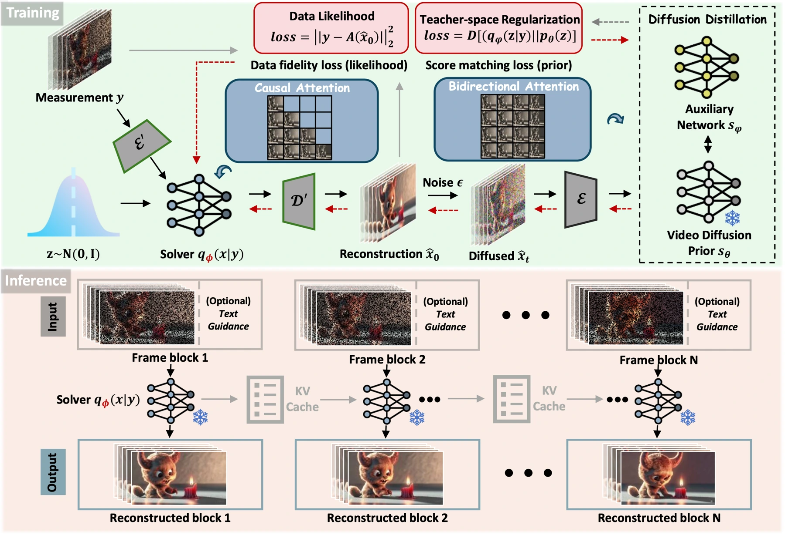
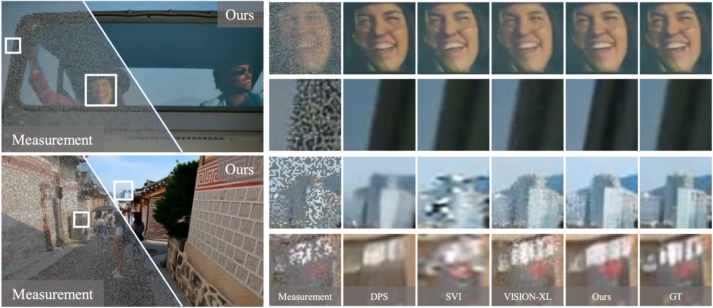

Interactive video needs both coherent reconstruction and low delay. Iterative diffusion methods can deliver strong visual quality, but repeated sampling makes real-time deployment difficult. Applying image models frame by frame also risks temporal artifacts.
交互式视频既需要时间连贯的重建，也要求低延迟。迭代扩散方法具有较好的视觉质量，但反复采样妨碍实时部署；逐帧应用图像模型又容易引入时序伪影。
The design question is how much of the iterative teacher’s behavior can be moved into training, so that deployment can process the next frames without running the full sampling procedure again.
设计的关键是将迭代教师的多少行为移到训练阶段，让部署时处理后续帧不必再次运行完整采样过程。
Distilling restoration into a causal pass将复原蒸馏为因果前向过程
InstantViR distills a bidirectional video diffusion teacher into a causal autoregressive student. Restoration takes a single forward pass rather than iterative test-time optimization. Training uses the teacher and known degradation operators, without requiring an external paired clean/degraded dataset. LeanVAE further reduces the cost of latent-space processing.
InstantViR 将双向视频扩散教师蒸馏成因果自回归学生，使用单次前向传播完成恢复，替代测试阶段的迭代优化。训练只依赖教师模型和已知退化算子，无需外部配对的干净与退化视频数据。LeanVAE 进一步降低潜空间处理成本。
The teacher can use bidirectional temporal context during training, while the student must operate causally when processing a stream. Distillation transfers the teacher’s reconstruction prior into a form compatible with that constraint. Known forward operators connect a candidate clean video to the observed degradation, keeping the inverse problem explicit. LeanVAE addresses the cost of encoding and decoding latent representations, which can remain substantial even after iterative diffusion steps are removed.
教师在训练时可以使用双向时间上下文，而学生在处理视频流时必须遵守因果约束。蒸馏将教师的重建先验转化为适合该约束的形式；已知前向算子连接干净视频与退化观测，使逆问题保持明确。LeanVAE 则降低潜空间编解码的开销，因为去除迭代扩散后，这部分成本仍可能很大。
{kind=link}

Measuring an entire video pipeline评测完整视频处理流程
Training uses 6,000 Open-Sora clips, with degraded measurements produced through known forward operators. Evaluation uses 500 held-out clips and REDS30 for zero-shot transfer, covering random inpainting, Gaussian deblurring and 4× super-resolution at 832×480. The paper measures per-frame fidelity, perceptual quality, temporal distribution and throughput. It reports the original-VAE model separately from the LeanVAE-accelerated variant.
训练使用 6,000 段 Open-Sora 视频，通过已知前向算子生成退化观测。评测包含 500 段保留视频和用于零样本迁移的 REDS30，覆盖 832×480 分辨率下的随机补全、高斯去模糊及 4× 超分辨率，同时衡量逐帧保真、感知质量、时间分布和吞吐率，并区分原 VAE 与 LeanVAE 加速版本。
The throughput gain and its conditions吞吐量收益及其条件
Table 1 reports 13.91 FPS for the original-VAE model and 35.56 FPS for the LeanVAE variant, with runtime measured on a single NVIDIA A800 80GB in the evaluation protocol. Across inpainting, deblurring and super-resolution, the one-step approach improves or remains competitive on the reported temporal and reconstruction measures. The speed advantage is substantial, but the variant, resolution and hardware are essential context.
表 1 报告原 VAE 版本为 13.91 FPS、LeanVAE 版本为 35.56 FPS；评测协议中耗时在单张 NVIDIA A800 80GB 上测量。在补全、去模糊和超分辨率任务中，单步方法的时间一致性与重建指标改善或保持竞争力。速度优势显著，但必须结合版本、分辨率和硬件理解。
{kind=link}

Fast restoration still needs temporal consistency快速复原仍需时序一致性
Distillation moves iterative work from serving time into training. This is attractive when many videos share a known restoration task, but changing the degradation or operating far outside the training distribution can change the trade-off. The method also illustrates why throughput must be reported alongside resolution and model variant: “real time” is a property of a complete setup, not just the architecture.
蒸馏将迭代计算从服务阶段转移到训练阶段，适合大量视频共享已知恢复任务的场景。不过，改变退化过程或远离训练分布，可能改变效果与成本的平衡。吞吐率必须连同分辨率和模型版本报告，“实时”属于整套运行条件，而不只是架构名称。
Paper & authors论文与作者
InstantViR: Real-Time Video Inverse Problem Solver with Distilled Diffusion Prior ↗
Cite this work
@misc{bai2025instantvirrealtimevideoinverse,
title = {InstantViR: Real-Time Video Inverse Problem Solver with Distilled Diffusion Prior},
author = {Weimin Bai
and Suzhe Xu
and Yiwei Ren
and Jinhua Hao
and Ming Sun
and Wenzheng Chen
and He Sun},
year = {2025},
eprint = {2511.14208},
archivePrefix = {arXiv},
primaryClass = {cs.CV},
url = {https://arxiv.org/abs/2511.14208}
}